A road trip from Prague to Venice through seven countries: baroque libraries, a salt mine, alpine passes, and long walks through old towns.
Shorter versions skip whole days, the ones I'd skip myself; longer ones add only what I'd go back for. Every day has a Google Maps link; the My Maps file has every place (import it at google.com/mymaps).
Fly into Prague, fly out of Venice, and drive in between. The cities are best on foot, so the days alternate: whole days walking in Prague, Krakow, Budapest and Vienna, and driving days that string together caves, castles and mountain passes.
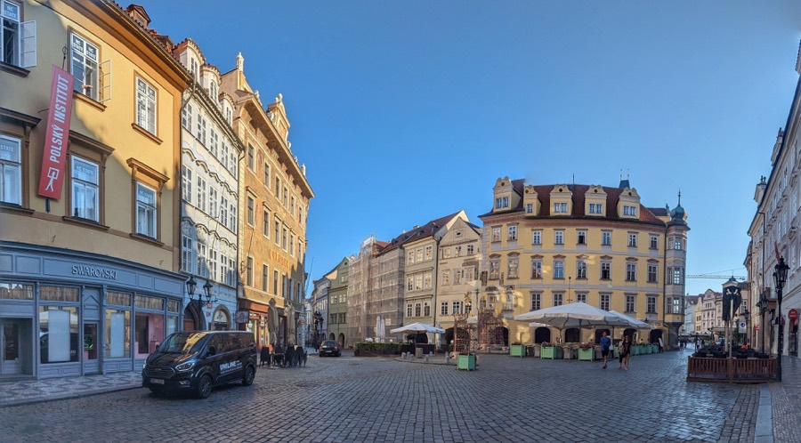
Day 1
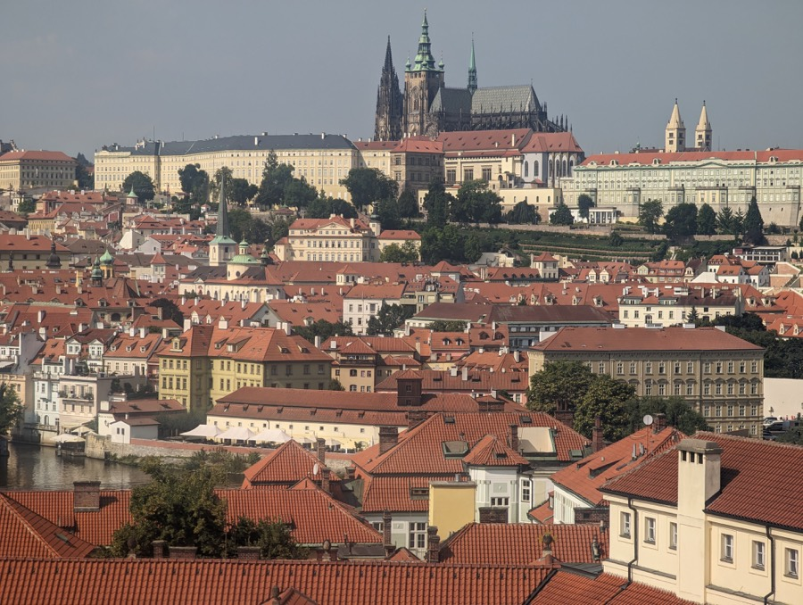
Day 2
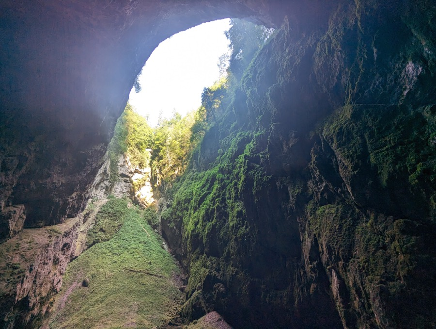
Day 3
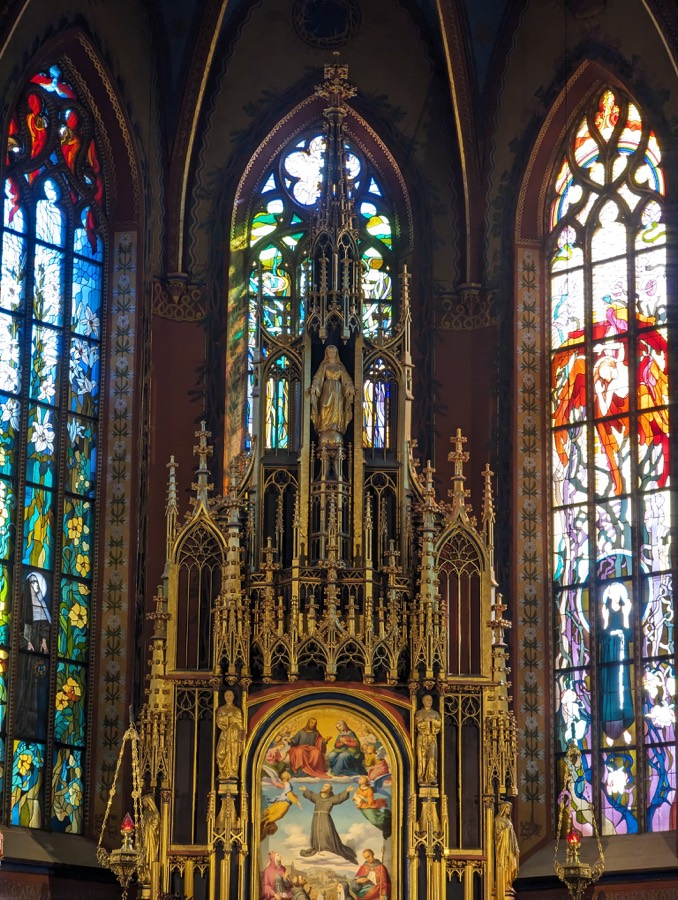
Day 4
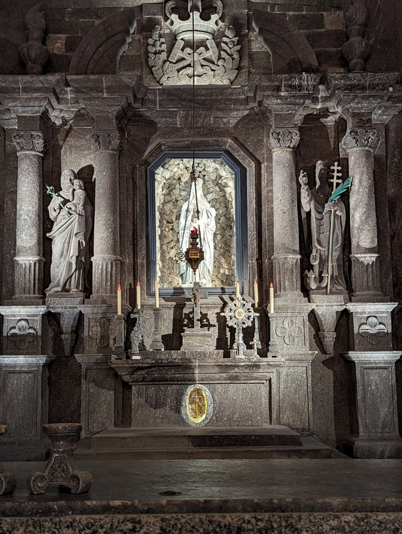
Day 5
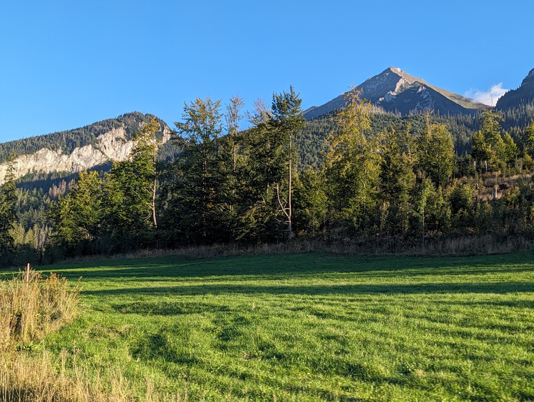
Day 6
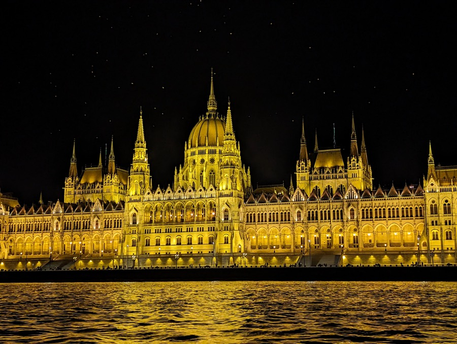
Day 7
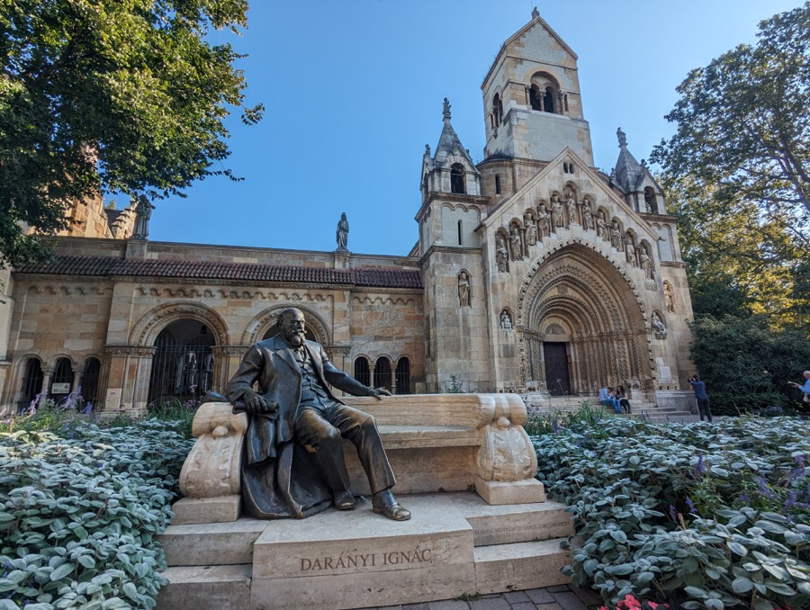
Day 8
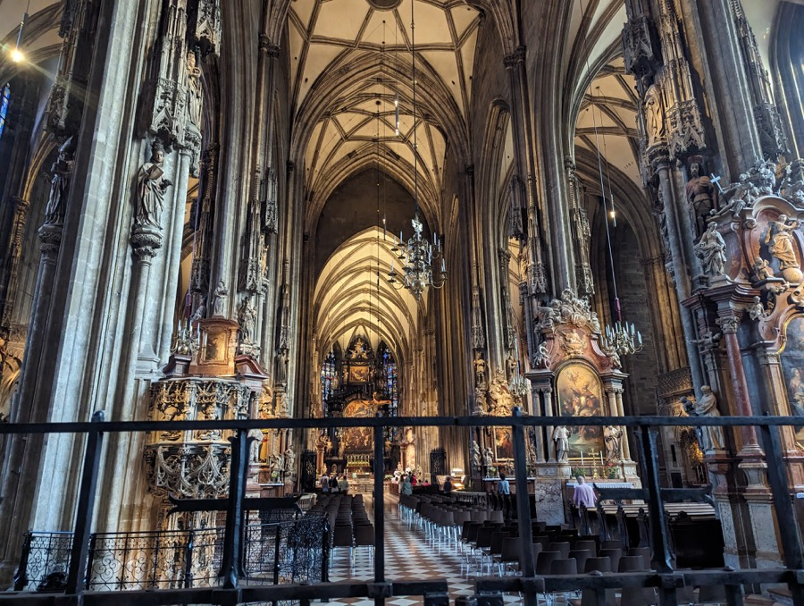
Day 9
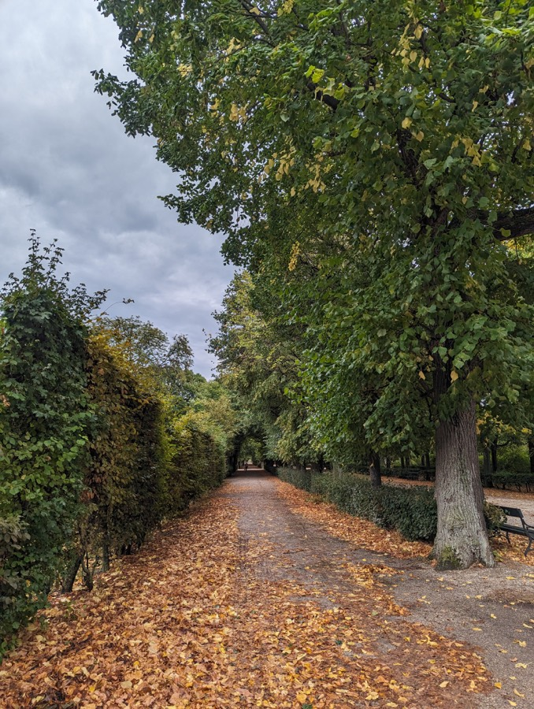
Day 10
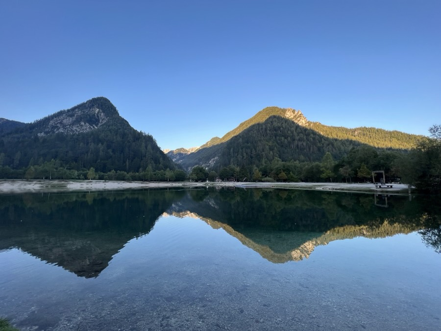
Day 11
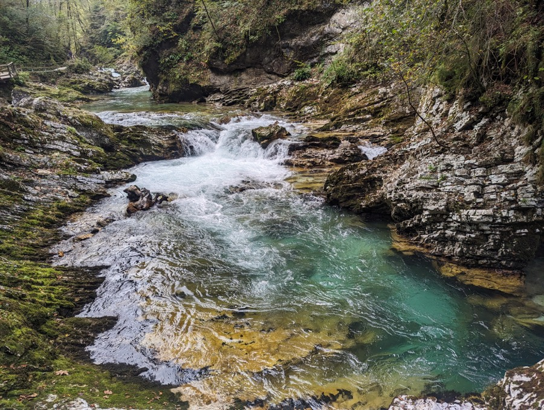
Day 12
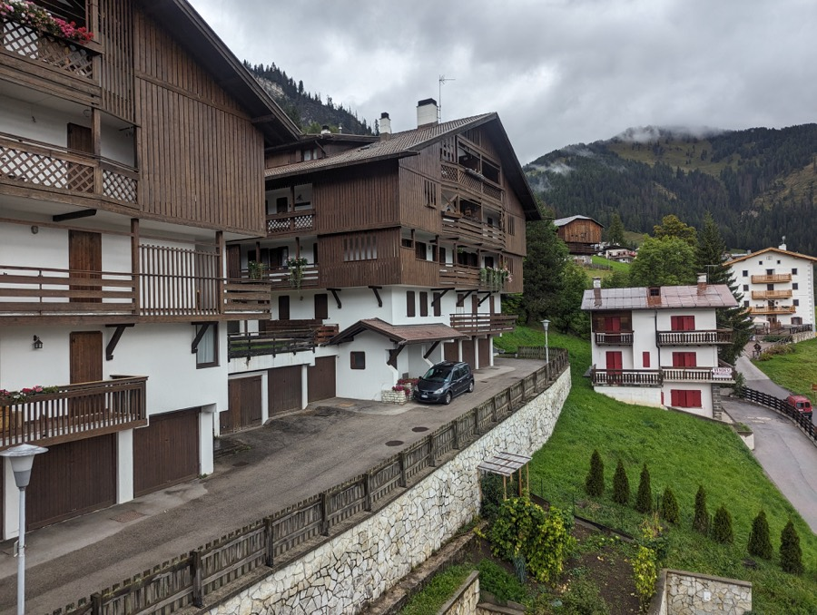
Day 13
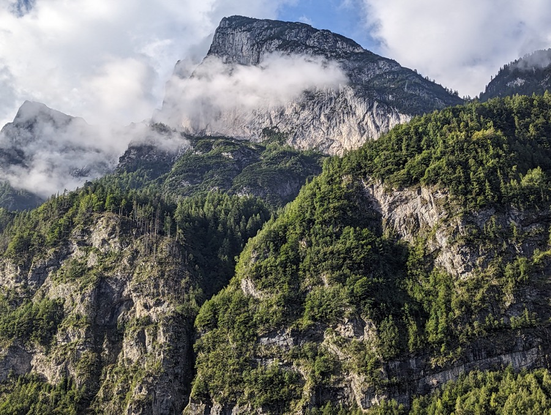
Day 14
It sits under the main square. Its maps put Krakow at the centre of medieval Europe’s trade routes: a Europe-centred view of the world that was new to me.
The Budapest History Museum inside the castle walks through the armies that came through Hungary, starting with the Romans, when Budapest was Aquincum on the empire’s frontier. Buda itself was held by the Ottoman Turks for almost 150 years, from 1541 to 1686; for much of that time Bratislava served as Hungary’s capital, and Vienna twice held off Ottoman sieges, in 1529 and 1683. I had thought of Europe mostly as the coloniser. Seeing how much of its own past was war and invasion, I came away with more empathy, and some sense of why it became the conqueror it did.
Book a slot well ahead.
We rented from Budget, picked up in Prague and dropped off in Venice. Picking up and dropping off in the same city is far cheaper, if your route allows it.
Crossing borders needs their permission and often a cross-border fee. Without it the insurance and breakdown cover can be void.
Czechia, Slovakia, Hungary, Austria and Slovenia need one, tied to your number plate; we bought each online as we were about to cross the border. Poland and Italy charge tolls on some motorways instead. In Austria a digital vignette bought online only becomes valid 18 days after purchase, so buy it early or get a sticker at a petrol station.
Check before you book if you’re driving.
The most beautiful: the Dolomites passes on day 13, Zakopane to Budapest through the Slovak Tatras on day 6, and up to the Vršič Pass on day 11.
Kitchens and showers were small by American standards almost everywhere, and not every place had laundry, so check the listing if you need it.
Our Airbnb in Zakopane was in the attic and extremely cramped, and the one in Kranjska Gora had a very narrow, steep staircase. Many older houses have no lift, so with big bags, look for stairs and ceiling height in the listing photos.
Mountain weather changes fast. Our first full day there was so wet and cloudy that we couldn’t hike, and the Lagazuoi cable car disappeared into the cloud. A flexible day lets you wait for a clear one.
Overcrowded, dirty and scammy.
Dirty, and overhyped.
Nothing special.
Driving and walking times are routing estimates for the stops in the order listed, without time spent at them; plan for more. Driving times come from OSRM, walking times from the FOSSGIS foot router, both on OpenStreetMap data. Slovakia is crossed twice on the way, with stops but no nights. Photos are from the trip. Map data © OpenStreetMap contributors; map tiles by OpenFreeMap. The itinerary is also available as data and as text.